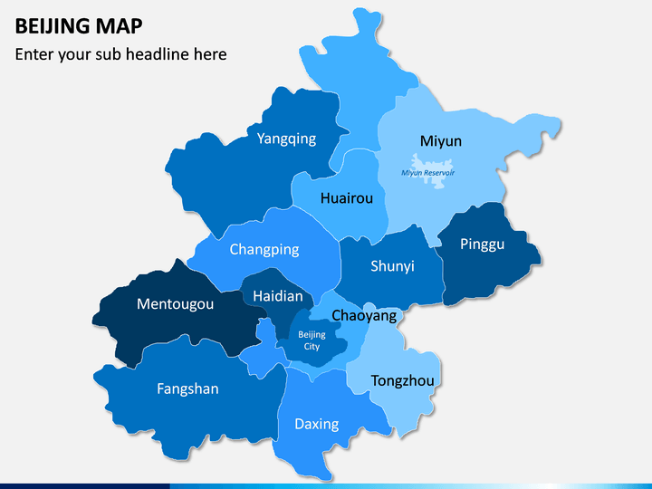

There are a lot of amazing experiences that I had experienced during my studies.
During my Diploma I had join 2 international programs 1 national and several University level programs.
All of them gave me valuable experiences no matter what the level is.
The one that I am mostly proud of is The Beijing Summer Camp program.
I never thought that I would be chosen due to the limited number of participants that will be chosen from all around Malaysia.
But I did it! The moments are so amazing I really feels like I am part of their students there.
Making new friends from China and also from all parts of Malaysia. All of us are from different universities but we manage to enjoy our 14 days in China like a family.
If I had a chance to join such program again I would love to. This is because I can gain new best experiences that I can never experienced here in Malaysia.
I also had the chance to travel while studying during that program so, yeah it is absolutely amazing! I really hope that Covid-19 pandemic will be recovered soon.
Below is a Beijing map. There I had already able you to click & travel virtually to some places the places that I had been before nearby Beijing City.
